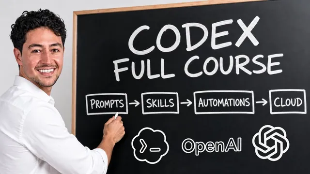

실무용 Codex 풀강의 (4시간 30분)

원본 영상 보기 →
- AI 결과물은 한 번 보고 판단하면 안 돼요
- 프롬프트 → 스킬 → 로컬 자동화 → 클라우드 자동화는 건너뛸 수 없는 성숙도 사다리예요
- 자동화는 사람을 100% 대체하는 게 아니라 90%의 생산 업무를 걷어내는 거예요
한 줄 요약
자동화 크리에이터 Nick Saraev가 4시간 반짜리 무료 코스를 공개했어요. 코덱스(Codex, OpenAI의 에이전트형 코딩 도구)로 실제 비즈니스 4개 기능을 처음부터 끝까지 자동화하는 전 과정을 보여줍니다. 세일즈 제안서 발행, 콘텐츠 리퍼포징, CRM/PM 파이프라인 관리, 음성 상담원까지요.
전체 내용 정리
코덱스 설치와 인터페이스 한눈에 익히기
Nick은 openai.com/codex에서 앱을 내려받아 로그인하는 것부터 시작해, 낯설어 보이는 코덱스 화면의 거의 모든 버튼을 짚어줘요.
좌측 사이드 패널에는 코덱스가 직접 조작하는 브라우저와 터미널이 있어서, 웹앱을 만들 때 실시간으로 화면을 확인할 수 있습니다. 새 대화창에서는 프로젝트(작업용 폴더)를 지정한 뒤 텍스트나 음성으로 요청을 입력하죠.
요청을 보내면 모델이 무엇을 하는 중인지 보여주는 진행 로그와 파일 변경 내역(빨간불/초록불로 추가·삭제된 줄 수)이 나타나고, 매번 승인받을지 전권을 줄지(풀 액세스) 선택할 수 있어요.
모델 선택기에서는 테라·루나·5.4미니 같은 지능 등급과 함께 medium/high/ultra 같은 작업 강도(effort)를 고를 수 있습니다. 강도가 높을수록 품질은 좋아지지만 사용량(usage)을 더 많이 소모해요.
음성 받아쓰기(dictation) 버튼은 로컬 위스퍼(Whisper) 모델로 말을 텍스트로 바꿔줍니다. 사람은 분당 150~200단어를 말하지만 타이핑은 50~75단어에 그치기 때문에, Nick은 코스 내내 이 기능으로 프롬프트를 입력해요.
이외에 예약 작업(scheduled), 플러그인/MCP 연결, 풀 리퀘스트(Pull Request) 등도 다루는데요. 이 기능들은 뒤에서 실전 자동화를 만들 때 하나씩 다시 등장합니다.
자동화 설계 프레임워크: RACE와 4단계 성숙도 모델
Nick은 10년간 온라인 비즈니스를 운영하며 정립한 자신만의 우선순위 프레임워크 RACE(Reach·Acquisition·Conversion·Expansion, 도달·획득·전환·확장)를 소개해요.
그의 주장이 흥미롭습니다. 사람들이 흔히 백엔드 업무(회계, 행정)부터 자동화하려 하지만, 실제로 투자 대비 수익이 가장 큰 곳은 프런트엔드라는 거예요. 고객을 늘리고(Reach), 관심으로 전환하고(Acquisition), 결제로 바꾸고(Conversion), 기존 고객을 키우는(Expansion) 영역이죠.
계산도 보여줍니다. Reach를 50% 개선하고 Acquisition을 20%, Conversion을 10%, Expansion을 10% 개선하면 매출은 산술합이 아니라 1.5×1.2×1.1×1.1로 곱해져 원래보다 2.2배가 돼요.
실행 방법론으로는 4단계를 제시합니다. 프롬프트(1회성 작업) → 에이전트 스킬(재사용 가능한 체크리스트로 정형화) → 로컬 자동화(내 컴퓨터에서 트리거로 자동 실행) → 클라우드 자동화(내 컴퓨터를 꺼도 서버에서 무인 실행)요.
이 코스에서는 세일즈·마케팅·운영·음성 에이전트 네 가지 업무를 이 4단계 흐름대로 하나씩 처음부터 끝까지 구축해 보입니다.
세일즈 자동화 1 - 통화 녹음을 즉시 제안서로 바꾸는 프롬프트 설계
첫 실습은 상담 전화 녹취를 서명과 결제까지 가능한 고품질 제안서 웹페이지로 자동 변환하는 시스템이에요.
Nick은 자신의 자동화 대행사 Leftclick에서 실제로 쓰는 제안서 예시(도입부, 서비스 상세, 서명란, 결제 버튼)를 보여준 뒤, 코덱스에 음성으로 요청합니다. "에어컨 설치, 진입로 포장, 마케팅 서비스 세 업종의 HTML 제안서 템플릿을 서로 완전히 다른 톤과 구성으로 만들어 달라"고요.
그는 여기서 중요한 조언을 해요. 결과물을 하나만 보고 판단하지 마세요. AI 출력은 동전 던지기처럼 확률 분포(A~F 등급)를 따르기 때문에, 한두 번 결과가 나쁘다고 "AI는 별로다"라고 단정하면 안 된다는 겁니다. 20~30개를 생성해 평균과 최고 결과를 함께 보는 습관을 들이라고 조언하죠.
이어 서명 캔버스(마우스로 직접 그려 서명 저장)와 가짜 스트라이프(Stripe) 결제 페이지 추가를 요청하고요. 마케팅 제안서 템플릿을 상담 녹취록에서 자동으로 채울 수 있는 병합 변수(merge variable) 구조로 바꾼 뒤, 가상의 고객 Maya Chen과의 20분짜리 영업 통화 대본을 만들어 실제로 적용해 봅니다.
완성된 제안서는 Netlify에 짐작하기 어려운 긴 URL로 배포해, 도크사인(DocSign)처럼 링크 하나로 고객에게 전달할 수 있는 형태가 돼요.
세일즈 자동화 2 - 스킬로 승격시켜 반복 재현성 확보하기
프롬프트로 결과가 검증되자 Nick은 이를 "에이전트 스킬(agent skill)"로 승격시킵니다.
스킬은 SKILL.md(핵심 지침)와 스크립트·참고자료·자산 폴더로 구성된 표준 포맷이에요. 대화창을 새로 열 때마다 매번 같은 지시를 반복하지 않고도 동일한 결과를 재현하게 해주죠.
그는 스킬을 만들 때 가장 흔한 실수를 짚어요. "프롬프트로 먼저 검증하지 않고 곧바로 스킬부터 만드는 것"입니다. 반드시 수작업으로 경로를 확인한 뒤 그 과정만 군더더기 없이 정제해 스킬로 굳히라고 권합니다.
"transcript-2-proposal"이라는 스킬이 만들어지자 Maya Chen 대본으로 재검증한 뒤, 서브 에이전트(sub agent) 3개를 병렬로 띄워 서로 다른 가상 상담 3건을 동시에 제안서로 변환했어요.
순차 처리라면 5분×3건=15분이 걸릴 일이, 병렬 처리로는 체감 5분(월클록 타임 기준)이면 끝난다는 점을 실제로 보여줍니다. 이것이 코덱스를 다룰 때 그가 가장 자주 쓰는 설계 패턴이라고 강조하네요.
세일즈 자동화 3 - 로컬 자동화로 Zoom 통화를 자동 감지해 제안서 생성
다음 단계는 사람이 대본을 복사·붙여넣기 하지 않아도 되는 로컬 자동화예요.
Nick은 Zoom 녹화 폴더를 감시해 새 녹음이 생기면 로컬 위스퍼(MLX Whisper)로 자동 전사하게 했습니다. 그 결과를 "proposal inbox dispatcher"라는 이름의 예약 작업이 스킬에 넘겨 제안서를 만들게 했죠(처음엔 1분마다였는데, 컴퓨터 발열 때문에 15분마다로 조정했다고 해요).
이런 반복 실행 방식을 코덱스에서는 "하트비트(heartbeat)"라 부릅니다. 폴링(polling, 매 간격마다 확인하는 방식) 대신 이벤트 기반(트리거 발생 시 즉시 실행)으로 만드는 것이 더 효율적이라고도 언급해요.
실제로 테스트 통화를 하나 만들어 흘려보내자 자동화가 통화를 감지해 제안서를 완성했습니다.
Nick은 이 시스템을 확장하면 영업 통화와 내부 회의를 구분해 각기 다른 후속 조치를 만들 수 있다고 소개해요. 통화 중 흘러나온 생일·반려동물 이름 같은 정보까지 CRM에 자동 기록하는 식으로도 발전시킬 수 있다고요.
세일즈 자동화 4 - 클라우드로 완전 무인화 (Fathom 웹훅 + Netlify 대시보드)
마지막 단계는 자신의 컴퓨터를 켜둘 필요가 없는 완전 클라우드 자동화입니다.
Nick은 회의 녹화 툴 Fathom을 연결해 웹훅(webhook, 이벤트 발생 시 지정된 주소로 신호를 보내는 기능) URL을 발급받았어요. 그리고 코덱스에게 "/goal" 명령으로 완료 기준(정의된 목표)을 준 뒤, 사람 개입 없이 알아서 클라우드 워커를 설계·배포하게 맡겼습니다.
코덱스는 스스로 API 문서를 찾아 읽고, Netlify의 백그라운드 함수와 상태 엔드포인트를 구축했어요. Nick은 실제로 Fathom 테스트 통화를 진행해 가상 고객 Emily Waters를 위한 마케팅 패키지 상담을 녹음합니다.
통화가 끝나자 시스템은 녹취를 자동으로 가져와 제안서를 생성했고, 토큰으로 보호된 "제안서 인박스" 대시보드 페이지에 모든 제안서가 쌓이는 구조까지 완성됐어요.
Nick은 이 단계에서 슬랙 알림 연동이나 서명 검증 강화 같은 후속 개선도 쉽게 얹을 수 있다고 덧붙이며 세일즈 모듈을 마무리합니다.
마케팅 콘텐츠 리퍼포징 - 뉴스레터 하나를 X/링크드인/인스타그램으로 증식시키기
두 번째 비즈니스 모듈은 긴 콘텐츠(뉴스레터) 하나를 여러 플랫폼에 맞게 자동으로 재가공하는 파이프라인이에요.
Nick은 실제로 수만 명에게 발송했지만 클릭률이 저조했던 뉴스레터를 예시로 들어요("전환율 = 고객이 기대하는 ROI × 신뢰(사회적 증거) ÷ 마찰"이라는 내용이었죠). 이를 그대로 복사해 X(트위터)에 올리면 글자 수 제한(약 280자)을 넘겨 노출이 불리해진다고 설명합니다.
그는 코덱스에 "이 뉴스레터를 X·링크드인·인스타그램용으로 각각 최적화하고, 손글씨 메모지 느낌의 이미지도 함께 생성해 달라"고 요청했어요. GPT 이미지 생성 기능이 내장된 덕분에 별도 연동 없이 곧바로 노트 이미지를 만들어냈습니다.
다만 초기 결과물은 전형적인 "AI 말투"였어요. 굵은 훅 문장 뒤에 줄바꿈을 넣는 상투적 패턴, 해시태그 남발 같은 것들이죠. 그는 이를 "LLM-이즘(LLM-ism)"이라 부르며 강하게 비판하고, 사람이 최종 검수 없이 자동 게시하는 것에는 반대한다고 못박습니다.
리퍼포징 자동화 완성 - 톤 오브 보이스 다듬기부터 클라우드 스케줄까지
Nick은 자신의 실제 음성 메모를 예시로 들어 톤을 교정했어요. 자연스럽고 소문자 위주, 문장 끝 구두점 생략, 70~100자 단위 줄바꿈 같은 특징이 있었죠.
반AI스러운 글쓰기 원칙도 코덱스에 상세히 지시했습니다. idiom·클리셰·불필요한 수식어 금지, 같은 개념을 두 단어로 반복하지 않기 같은 것들요. 그리고 그 규칙을 playbook.md라는 편집 지침 파일로 저장해 재사용 가능하게 만들었어요.
만족스러운 결과가 나오자 이를 "content repurposer"라는 스킬로 승격시켰고, 이미지·텍스트 생성을 서브 에이전트로 병렬화해 실행 시간을 10분에서 5분으로 줄였습니다.
이어 뉴스레터 발송 플랫폼 Kit을 MCP(Model Context Protocol, 외부 서비스와 AI를 연결하는 표준)로 직접 연동했어요. "매일 아침 5시 59분에 새 뉴스레터가 있는지 확인하고, 있으면 자동으로 리퍼포징한다"는 로컬 자동화를 만들었고, 이미 처리한 뉴스레터를 중복 처리하지 않도록 처리 이력(ledger)도 함께 관리하게 했죠.
마지막으로 GitHub 연동을 통해 코덱스 클라우드(Codex Cloud) 컨테이너를 띄우고, 동일한 작업을 완전히 서버에서 자동 실행되는 "cloud content repurposing dispatcher"로 전환했어요. 장문 콘텐츠 하나로 시작해 짧은 콘텐츠로 압축하는 편이 반대 방향보다 품질이 좋다는 팁도 곁들입니다.
운영 자동화 - ClickUp·Slack을 감시하는 파이프라인 위생 챔피언
세 번째 모듈은 CRM과 프로젝트 관리 시스템을 매일 순찰하는 "챔피언" 시스템이에요. 정체된 딜과 지연된 작업을 찾아 담당자를 슬랙으로 콕 찍어 알려줍니다.
Nick은 ClickUp 안의 영업 파이프라인(신규 리드→디스커버리→제안서 발송→협상→계약→계약 완료/실패)과 갱신(renewal) 보드, 프로젝트 관리 보드를 보여줘요. 사흘 전에 계약서를 보냈지만 서명이 없는 딜처럼 방치된 항목을 예로 들죠.
그는 이 시스템이 제대로 작동하려면 지식 베이스(knowledge base) 텍스트 파일이 반드시 필요하다고 강조합니다. "회사가 무엇을 하는지, 조직도는 어떻게 되는지, 누구에게 얼마 이상 결재권이 있는지"를 담은 파일이요.
실제로 가상 회사 Arclate Digital(연매출 1,050만 달러, 직원 38명)의 조직도와 팀원별 슬랙 ID·시간대·연락처가 담긴 파일을 코덱스에 입력했어요.
슬랙 플러그인을 연결해 매일 상태를 점검하고 담당자에게 개별 메시지(일괄 발송이 아니라요)를 보내도록 설계했습니다. 특히 "이 지연으로 회사가 잃을 수 있는 금액(달러)을 함께 표기하라"는 지시를 추가해 실행을 재촉하는 효과를 높였어요.
처음엔 실행이 느렸는데요. "방금 한 실행 경로를 검토해서 낭비된 탐색을 정리하고 절반의 토큰으로 절반의 시간에 끝나게 스킬을 업데이트하라"고 지시하는 방식으로 3~4배 속도를 개선했습니다. 이후 로컬 스케줄(매일 오전 6시)을 거쳐 클라우드 자동화로 전환했죠.
음성 에이전트 제작기 - 언제 써야 하고 언제 쓰면 안 될까요
Nick은 "음성 에이전트를 싫어하는 사람"으로 알려져 있어요. 하지만 무조건 반대하는 것이 아니라, 적용 범위를 잘못 잡는 경우가 많다고 설명합니다.
그는 두 가지 실제 사례를 대비시켜요.
하나는 사모펀드 운영자가 일주일에 한 시간, 수백만~수천만 달러가 걸린 기업 인수 상담 전화를 음성 에이전트로 자동화하고 싶어 한 경우입니다(고객생애가치는 높고 빈도는 낮죠).
다른 하나는 주당 1만 건 이상, 통화당 20분(주 333시간)씩 반복되는 저위험 고객지원 전화를 자동화하려는 대형 기업 사례예요(고객생애가치는 낮고 빈도는 높습니다).
그는 이를 2×2 매트릭스로 정리합니다. "고빈도·저LTV" 영역에서만 음성 에이전트를 적극 도입하고, "저빈도·고LTV"(전체 조합의 4분의 1에 해당) 영역에는 절대 쓰지 마세요.
이어 GPT 리얼타임 API(OpenAI의 실시간 음성 대화 모델)의 동작 원리를 설명하는데요. 사용자가 말하면 먼저 빠르고 단순한 모델이 "네, 그렇군요" 같은 즉각 반응을 채우는 동안, 더 똑똑한 모델이 실제 답변을 준비하는 이중 구조로 지연을 숨긴다는 점을 강조해요.
음성 에이전트 구현 - 웹 데모에서 실제 전화 수신까지
Nick은 먼저 웹 브라우저에서 마이크로 대화하며 구글 캘린더에 일정을 추가하는 MVP 앱을 코덱스로 5분 만에 만들었어요. 이후 대화 내용이 끊겨 보이는 문제(스트리밍 미적용)와 AI스러운 디자인을 지적해, 실시간 파형(웨이브폼) 애니메이션과 라이트 모드 UI로 개선했습니다.
실제 전화망 연결을 위해서는 세 가지를 조합해야 해요. Twilio(전화번호 구매·SIP 트렁크), OpenAI의 네이티브 SIP 엔드포인트, 그리고 서버 역할을 하는 Modal(월 30달러 무료 크레딧 제공 서버리스 플랫폼)이요. 그는 이 인프라 설명 없이도 코덱스와 대화만으로 값을 채워가며 구축이 가능하다는 점을 실증합니다.
첫 실제 전화 연결은 두 번 실패했어요("통화를 완료할 수 없습니다"라는 메시지가 떴죠). 하지만 오류 로그를 그대로 코덱스에 붙여넣자 원인을 스스로 진단해 수정했고, 세 번째 시도에서 "Relay"라는 이름의 음성 에이전트가 전화로 일정을 잡는 데 성공했습니다.
다만 초반 버전은 사용자 이름을 과도하게 반복 호출하는 등 어색함이 있었어요. 프롬프트를 다듬어 더 가볍고 빠른 모델로 교체하자 자연스러운 대화가 완성됐고요. Nick은 이 구조에 캘린더 대신 리드 자격 검증, 예약 시스템 연동 등 다양한 도구를 붙일 수 있다고 소개합니다.
시스템 유지보수 - 의존성 붕괴, API 변경, 확률적 실패 다루기
Nick은 완성한 자동화가 영원히 그대로 작동하지 않는다며 세 가지 고장 원인을 짚어요.
첫째는 "브레이킹 체인지(breaking change)"입니다. 외부 서비스가 API 경로를 바꾸면 그 경로에 의존하던 스크립트가 한꺼번에 멈추죠. GitHub에 코드를 버전 관리해두면 코덱스에게 "무엇이 바뀌었는지 확인하고 고쳐라"라고 지시해 몇 초 만에 해결할 수 있다고 설명합니다. GitHub는 또 특정 버전으로 되돌리거나, 이전 버전의 UX만 가져와 최신 버전에 이식하는 것도 가능하게 해줘요.
둘째는 "논브레이킹 체인지(non-breaking change)"예요. 겉보기 API는 그대로지만 내부 요구 형식이 바뀌어 조용히 실패하는 경우죠.
셋째는 신규 모델 출시 시 업그레이드를 놓치는 경우입니다.
마지막으로 그는 "확률성(stochasticity)"을 언급해요. AI는 동일한 프롬프트도 매번 조금씩 다른 결과를 낼 수 있으니, 한 번의 성공(혹은 실패)만으로 품질을 판단하지 마세요. 같은 작업을 여러 번 반복 실행해 정확도 점수(평가/eval)를 매기고, 실패 사례를 모아 스킬 자체를 스스로 고치게 하는 "셀프힐링 스킬(self-healing skill)" 접근을 반복하라고 권합니다.
고급 기법 - 브라우저 제어, 컴퓨터 사용, 서브 에이전트 병렬화
코스 후반부에서 Nick은 두 가지를 시연해요. API가 없는 웹사이트도 다룰 수 있는 브라우저 사용(browser use, 코덱스가 크롬 확장 프로그램으로 화면을 직접 조작), 그리고 스포티파이 앱을 열어 음악을 재생하고 앨범 커버를 스크린샷으로 찍는 것처럼 데스크톱 전체를 조작하는 컴퓨터 사용(computer use)이요.
이어 서브 에이전트의 핵심 설계 패턴인 "팬아웃-팬인(fan-out, fan-in)"을 설명합니다. 하나의 요청을 여러 서브 에이전트로 동시에 분산 처리한 뒤 결과를 다시 하나로 합치는 방식으로, 순차 처리 대비 서브 에이전트 개수만큼 시간을 단축할 수 있어요.
그는 서브 에이전트가 부모 스레드와 컨텍스트(대화 맥락)를 공유하지 않는다는 특성을 오히려 장점으로 꼽습니다. 긴 대화가 쌓여 이전 실패 경로에 오염된 상태로 마지막 요청을 처리하는 것보다, 깨끗한 컨텍스트를 가진 서브 에이전트에게 새로 맡기는 편이 품질과 비용 모두에 유리하기 때문이죠.
다만 서브 에이전트는 서로의 작업을 알지 못하므로, 같은 페이지의 서로 다른 부분을 동시에 수정하는 것처럼 상호 의존적인 작업에는 적합하지 않다는 점도 짚어요.
자주 묻는 질문 - 모델 간 이식, 코덱스 vs 클로드코드, 클라이언트 납품, 데이터 안전
마지막으로 Nick은 시청자 질문에 답합니다.
서로 다른 AI 모델(코덱스·클로드·제미나이) 간 워크플로를 복제하는 방법으로는, AGENTS.md(코덱스·딥시크·GLM 등이 채택한 공개 표준), CLAUDE.md, GEMINI.md 같은 시스템 프롬프트 파일을 프로젝트 폴더에 함께 두고 "한 파일이 바뀌면 나머지도 동기화하라"는 규칙을 넣으면 된다고 설명해요. 스킬 폴더 구조(.codex/skills vs .claude/skills)도 거의 동일하다고 덧붙입니다.
코덱스와 클로드 코드 중 무엇을 쓸지에 대해서는 이렇게 비유해요. "클로드가 순수 지능은 앞서지만 사용량 소모가 약 1.5배 빠르고, 코덱스는 업무용으로 더 경제적이다." 여러 모델을 직접 오케스트레이션하는 것은 "트위터에서는 멋져 보이지만 실질적 이득은 미미하다"고 일축하네요.
클라이언트에게 자동화를 납품할 때는 "항상 클라이언트 소유 인프라(그들의 코덱스 계정, 그들의 토큰 결제)에 구축해야 지속적인 비용 부담과 인질 리스크를 피할 수 있다"고 조언합니다. 지적재산권도 클라이언트 것이라는 점을 영업 포인트로 삼을 수 있다고요.
데이터 안전에 대해서는 "100% 안전한 것은 없다"고 전제하면서도, 플러그인 기반 연동(OAuth)은 대체로 안전하다고 해요. 개인식별정보(PII)는 전송 전에 걸러내는 절차가 필요하고, API 키는 절대 코드에 하드코딩하지 말고 .env 파일에 보관한 뒤, 배포 전 "여기 하드코딩된 게 있는지" 코덱스에게 재차 확인시키라는 실무 팁으로 코스를 마무리합니다.
핵심 인사이트
- AI 결과물은 한 번 보고 판단하면 안 돼요: Nick은 동전 던지기 비유를 들어, AI 출력은 A~F 등급의 확률 분포를 따르므로 한두 번의 나쁜 결과로 "AI는 못 쓴다"고 단정하는 것이 가장 흔한 오해라고 지적합니다. 같은 작업을 20~30번 돌려 평균과 최고치를 함께 보는 습관이 실무에서 결과물 품질을 좌우하죠.
- 프롬프트 → 스킬 → 로컬 자동화 → 클라우드 자동화는 건너뛸 수 없는 성숙도 사다리예요: 코스 전체에서 반복되는 이 4단계는 "먼저 손으로 검증된 경로만 스킬로 굳혀야 한다"는 원칙 위에 서 있습니다. 검증 없이 곧바로 스킬이나 자동화부터 만들려는 시도가 실패의 가장 흔한 원인으로 지목돼요.
- 자동화는 사람을 100% 대체하는 게 아니라 90%의 생산 업무를 걷어내는 거예요: Nick은 "코덱스가 한 사람의 일을 100% 대신하는 게 아니라, 천 명의 반복 생산 업무 90%를 대신한다"고 표현합니다. 사람에게는 15센트짜리 초안을 검수하는 10%의 취향·판단 역할만 남기는 것이 책임감 있고 실용적인 AI 활용법이라는 메시지죠.
오늘 당장 해볼 것
- 최근 상담이나 미팅 녹취록(또는 음성 메모) 하나를 코덱스나 클로드에 붙여넣고, "이 내용을 기반으로 제안서/견적서 초안을 HTML로 만들어 달라"고 3번 반복 요청해 결과물 3개를 비교해보세요.
- 최근 뉴스레터나 블로그 글 하나를 골라 이렇게 요청해보세요. "이 글을 X(트위터)·링크드인용으로 각각 280자, 1500자 분량으로 재가공해 달라. 상투적인 AI 말투(줄바꿈 훅, 해시태그 남발)는 빼 달라." 실제 톤 차이를 확인하실 수 있어요.
- 업무에서 매주 반복하는 "확인·독촉·리마인드" 작업 하나를 골라보세요. 담당 CRM이나 프로젝트 툴에서 처리해야 할 항목 목록을 코덱스나 클로드에 붙여넣고 "지연된 항목과 예상 손실 금액을 정리해 메시지 초안을 만들어 달라"고 시켜보며 자동화 가능성을 가늠해보시면 됩니다.